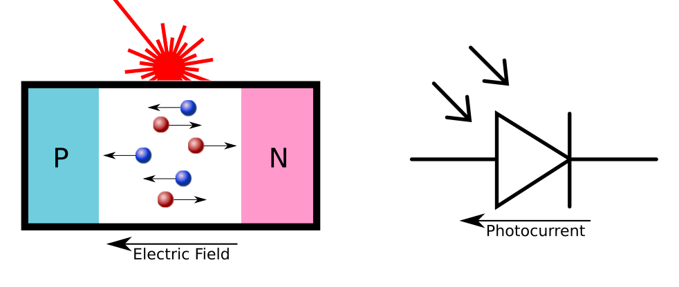
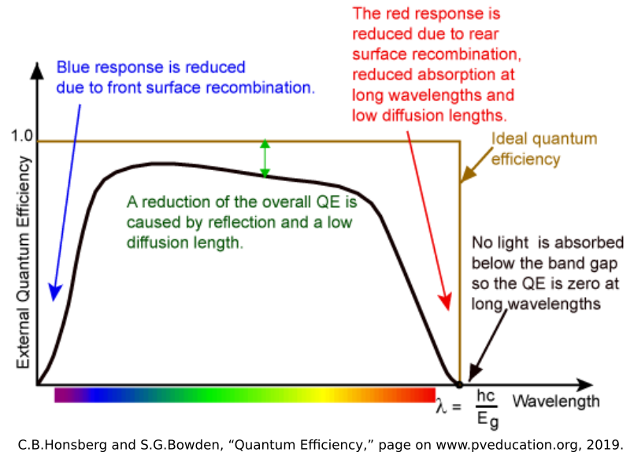

Waveform Synthesis with ModelSim Tutorial
This video shows how to read data from a wavetable and simulate a sine wave in ModelSim. The hex file containing the wavetable, the description of the project from WSU explaining waveform synthesis, and the verilog code I wrote to simulate the sine wave are attached below.
Huge shout out to my two undergraduate research assistants for their attention, intuitive questions, and valuable input! Thank you Sarthak and Yatian!
If you are interested in waveform synthesis check out my paper An Initial Implementation of a Direct Digital Synthesizer Module for Radar Applications.


Week 8 - Revisiting the Thermal Piston Model
This week, I revisited the thermal piston model and utilized Comsol modules such as laminar flow and fluid-structure interaction to model pressure changes in the air interacting with the membrane.
Thermal-Piston Model
Due to the rotational symmetry of the membrane, we can create the thermal-piston model using two dimensional geometry in Comsol and then project that model to three dimensions when analyzing properties such as temperature, displacement, etc.

The largest section of geometry represents a film of air, and at the bottom of the geometry, there is a membrane (larger rectangle) as well as a spring foundation (smaller rectangle). Inside the volume of air, we enable weakly compressible fluid flow- changes in density as pressure changes. After two laser pulses, the resulting pressure changes directly above the membrane, and displacement changes at the membrane are shown below:


The ambient air pressure is approximately 100 kPa. When the model is run with no temperature change (static air), that air pressure holds consistent for the entire time period. Thus, the application of heat is the cause behind pressure changes.
The maximum displacement of the membrane approximately 1e-4. This is higher than what we saw with the generation of thermoelastic waves indicating that the thermal-piston effect is larger in magnitude.
One problem with this representation of the thermal-piston model is that we assume a closed cell when in reality, the cavity that the diaphragm is located in would allow air to escape and cool air to replace warm air. Another problem with this model is that the air is weakly compressible. If we model the air as incompressible, there are no pressure changes, and if we model the air as fully compressible, the pressure changes are much higher. The best representation for the MEMs microphone is unclear, so more investigation needs to be done on which
Article of the Week: Row Hammer1 and Project Zero2
DRAM is organized into a two dimensional array of cells, and the close proximity of each cell makes memory susceptible to disturbance errors. One exploitation of disturbance errors is Row Hammer, where repeated toggling of the same row of cells in memory causes charge leaks in neighboring rows. This ultimately leads to cells losing data, so attacks that exploit Row Hammer can change memory they are not privileged to change. This paper presents one defense, PARA, which would rely on stateless, probability-based mechanisms to periodically refresh neighboring rows if a worline is toggled.
Google’s Project Zero has used the knowledge of the Row Hammer paper to show two major exploits: gaining kernel privileges when run as an unprivileged process, and escaping from the Native Client sandbox. For the first exploit, the authors of Project Zero found that it is possible to induce a bit flip on the page table using Row Hammer, and this bit flips allows attackers to gain read-write access to the page table and thus all of memory. In the second exploit, inducing a bit flip allows machine code running on Native Client to jump to unaligned addresses which may contain unsafe instructions.
The contents of both Row Hammer and Project Zero establish the need to resolve electromagnetic coupling issues between neighboring DRAM rows in order to guarantee the safety of computing technologies.
References
-
Flipping Bits in Memory Without Accessing Them: An Experimental Study of DRAM Disturbance Errors https://users.ece.cmu.edu/~yoonguk/papers/kim-isca14.pdf
-
Project Zero https://googleprojectzero.blogspot.com/2015/03/exploiting-dram-rowhammer-bug-to-gain.html

The Photovoltaic Effect
As I mentioned in my previous post, some of my recent research experience has been focused on light-based injection attacks. The causality of the laser injection attacks on LiDAR123 are fairly straightforward, as the LiDAR devices are designed to sense light. In the case of Light Commands4, the causality is not as clear. I will be investigating different physical phenomena to develop a model of what is going on. The next phenomenon that I want to look at is the photovoltaic effect.
Most of the information here was found in the literature for solar cell design, the most common use of photovoltaics. In particular, the website pveducation.org5 gave a wealth of information on the topic, so go there to learn even more.
The Photovoltaic Effect
Like the photoelectric electric effect, the photovoltaic effect occurs when light causes electrons within a material to change energy states. In the photoelectric effect, high energy photons cause the electrons to break free from the surface of the material altogether, but in the photovoltaic effect, the electrons only gain enough energy to jump from the valence bands to the conduction bands of a crystalline structure. This adds a negatively-charged electron carrier particle to the structure, and leaves behind a positively-charged carrier particle with the hole left behind. In most materials, the random thermal motions of the electrons means that the electron-hole pairs will recombine quickly, giving off light (as reflections) and generating no current. But there is a special case where it becomes more important: Doped Semiconductors.
P-N Junctions
Semiconductor technologies have made computers possible, and the fundamental unit of this technology is the P-N junction, often called a diode. In P-N junctions, a semiconductor (usually a group 14 element like silicon) that has no inherent charge is doped with other elements. In P-Type material, it is doped with group 13 elements (such as Boron or Gallium) that have an opening in their valence band that is easily filled by an electron. These “acceptor” atoms capture electrons, leaving an excess of positively charged holes. In N-Type material, it is doped with group 15 elements (such as Phosphorus or Arsenic) that have one loosely-held electron in their valence band. These “donor” atoms lose electrons easily, allowing the negatively-charged particles to move about the crystalline structure in the conduction band.
When the P-Type and N-Type materials are joined at a junction, the electrons in the N-Type material combine with the acceptors in the P-Type, and the holes in the P-Type material get filled by the donors in the N-Type. Since this exchange causes the acceptor atoms to become negatively-charged and the donor atoms to become positively-charged, an electric field is generated at the junction in the direction from the N-Type to the P-Type. The electric field drives out any carrier particles out of the junction, keeping the N-Type electrons from diffusing into the P-Type material, and vice versa.
This built-in electric field is the power of the P-N junction. When a voltage is applied in the same direction of the electric field (from N-Type to P-Type, Cathode to Anode) it just strengthens this electric field barrier and resists current flow like and insulator. When a strong enough voltage is applied in the opposite direction (from P-Type to N-Type, from Anode to Cathode) the built-in electric field is overcome and current flows as if it was a normal conductor.
While this is useful in rectifying AC signals, overvoltage protection, and in transistors, this P-N electric field also enables the photovoltaic effect. As mentioned before, when light hits the silicon material, it causes electrons to jump from the valence band to the conduction band, creating an electron-hole pair. While these electron-hole pairs often recombine, the presence of the electric field makes it much more likely that the electron will drift to the N-Type material, and the holes will drift to the P-Type material. This generates a measureable current.
The Mathematical Models
This current is what might be causing the signal generation in the Light Commands attack, but we need to understand the mathematical relationship between the light and the current being generated.
Band Gap
First, similar to the photoelectric effect, we need to understand at which frequencies of light this effect occurs. The energy required to move an electron from the valence band to the electric band is called the Band Gap ($E_{g}$). For silicon at room temperature, the band gap is ~1.11 eV6. From the last post, we know that the energy of a photon is related to its frequency:
$$E = hf$$So, the minimum frequency to cause an electron to jump from the valence band to the conduction band is:
$$f_0 = \frac{E_{g}}{h} = \frac{1.11eV * 1.602{\times}10^{-19}J/eV}{6.626{\times}10^{-34} J{\cdot}s} \approx 268 THz$$which means the wavelength is:
$$\lambda = \frac{c}{f_0} \approx 1120 nm$$This wavelength is in the near-infrared spectrum, and all the light frequencies used in the Light Commands attack have enough energy to cross the band gap.
Photon Flux
Now that we know that the frequencies we are using can cause the photovoltaic effect, we need to understand the relationship between light and current. I’m used to seeing laser light in terms of optical power ($P$). For example, class 1 laser pointers that are used in presentations are limited to a max optical power output of 5mW. In the photovoltaic effect, however, the important parameter is the number of photons striking the P-N junction per unit area per second. This is called the photon flux ($\phi$). The photon flux can be calculated from the optical power ($P$), the area of the laser beam ($A_B$), and the number of photons per unit energy. In monochromatic light, this is
$$\phi = \frac{P}{A_B} \times \frac{\lambda}{hc}$$ $$[photons/s/m^2] = \frac{[J/s]}{[m^2]} \times [photon/J]$$Diode Photocurrent
Now that we have the photon flux, we can then move to calculate the photocurrent generated. While the photon flux shows how many will strike the surface of the material, only a percentage of those photons will generate a current. This is because the random motions of the electron-hole pairs and crystalline defects in the junction (especially near the surface) will cause electron-hole pairs to recombine rather than drift the the ends of the junction. The ratio of the number of electrons that generate current to the number of photons that hit the junction is called the Quantum Efficiency ($\eta_{\lambda}$), and is a function of wavelength that is inherent to each P-N Junction.
Since we know the fundamental charge ($e = 1.602{\times}10^{-19} C$) per electron, we can calculate the current density ($J_{\phi}$) generated by the laser to be:
$$J_{\phi} = e\eta_{\lambda}\phi$$ $$[A/m^2] = [C/s/m^2] = [C/electron] \times [electrons/photon] \times [photons/s/m^2]$$ $$J_{\phi} = e\eta_{\lambda}\frac{P{\lambda}}{A_Bhc} [A]$$Then finally, the photocurrent is simply the current density multiplied by the cross-sectional area of the junction ($A_J$$):
$$I_{\phi} = J_{\phi} * A_J$$ $$[A] = [A/m^2] * [m^2]$$This brings the final photocurrent equation to:
$$I_{\phi} = \frac{e\eta_{\lambda}}{hc}{\times}\frac{A_J{\lambda}P}{A_B} [A]$$Discussion
What this equation tells us is that the current generated by the light is directly proportional to the optical power, which matches the roughly linear relationship between optical power and the signal generated in the Light Commands experiments. It also confirms that the focusing of the beam plays a large part, as the area of the beam is inversely proportional to the current. I will look at this in a future post, as it could mean the optics are even more important the the raw power of the beam.
Another factor is the wavelength. While the quantum efficiency is nonlinear and hard to solve mathematically, it can be approximated as a constant within the wavelengths we are interested in. With this assumption, the photocurrent is also directly proportional to wavelength, meaning that wavelengths inthe red and infrared will perform better than blue. This makes some intuitive sense, as red light contains more photons than blue light of the same optical power. More photons generates more electron-hole pairs, which means more current. The blue light photons have more energy, but that just means more energy gets wasted as light and heat, as you only need to cross that Band Gap of 1.11eV.
With this knowledge, we can make a hypothesis that if the photovoltaic effect is the primary cause of the Light Commands effect, then longer wavelengths of light in the red and infrared spectrum (up to the minimum frequency required to cross the band gap) will perform better than blue light at the same optical power density.
Open Questions
There are still some open questions and future work, however. While this describes how diodes will be affected by light, it leaves the question of how this relates to the circuit on the MEMs microphones themselves. To me, these ASICs are black boxes, where I can only presume certain circuit elements such as filters, amplifiers, and oscillators. Transistors are also more complicated, and the photocurrent generated in transistors may be more difficult to model than in diodes. I’ll need to dig deeper into MEMs circuit design to make some hypotheses about which circuit elements would be most vulnerable.
-
J. Petit, B. Stottelaar, and M. Feiri, “Remote Attacks on Automated Vehicles Sensors : Experiments on Camera and LiDAR,” 2015.
-
H. Shin, D. Kim, Y. Kwon, and Y. Kim, “Illusion and Dazzle: Adversarial Optical Channel Exploits Against Lidars for Automotive Applications,” in Cryptographic Hardware and Embedded Systems – CHES 2017, Cham, 2017, pp. 445–467, doi: 10.1007/978-3-319-66787-4_22.
-
Y. Cao et al., “Adversarial Sensor Attack on LiDAR-based Perception in Autonomous Driving,” in Proceedings of the 2019 ACM SIGSAC Conference on Computer and Communications Security, London, United Kingdom, Nov. 2019, pp. 2267–2281, doi: 10.1145/3319535.3339815.
-
lightcommands.com
-
C.B.Honsberg and S.G.Bowden, “Photovoltaics Education Website,” www.pveducation.org, 2019.
-
C. Kittel, Introduction to solid state physics, 8th ed. Hoboken, NJ: Wiley, 2005. pp. 180.